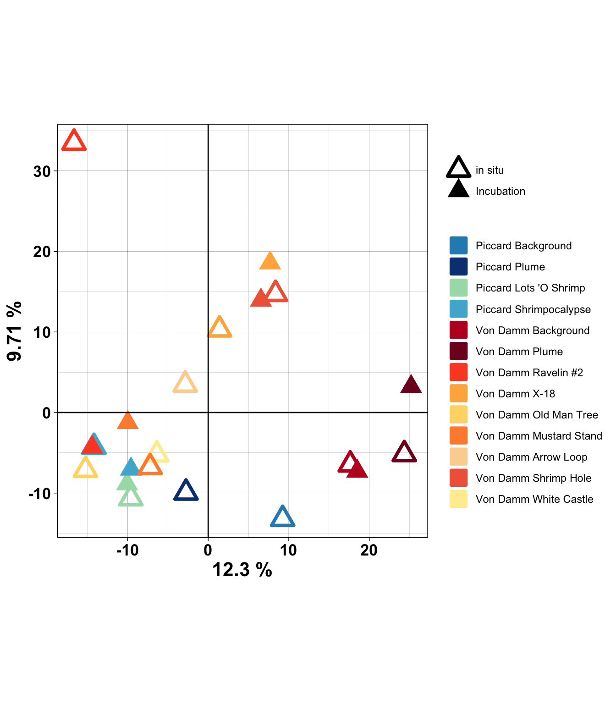

Code
library(tidyverse); library(phyloseq); library(ape)
library(ggupset)Goals for this analysis are to investigate specific protistan taxonomic groups in the context of elevated grazing activity, cell biomass, and hydrothermal vent sample type.
Data originate from in situ MCR samples from a tag-sequence survey and the Tf time point from the grazing experiments. Additionally, in situ and grazing experiments were conducted within vent sites, at the plume, and in the background.
Set up R environment
library(tidyverse); library(phyloseq); library(ape)
library(ggupset)Import previously sequenced and analyzed tag-sequence data. See https://shu251.github.io/microeuk-amplicon-survey/ for additional information.
load("input-data/MCR-amplicon-data.RData", verbose = T)Loading objects:
phylo_obj
samplenames
physeq_wnames
metadata_mcr
asv_wtax_qc
TAX
tax_matrix
physeq_mcr# physeq_mcrvent_ids <- c("BSW", "Plume")
vent_ids <- c("BSW","Plume", "Shrimpocalypse", "LotsOShrimp", "X18", "OMT", "OldManTree", "Rav2", "MustardStand", "ShrimpHole", "WhiteCastle", "ArrowLoop")
vent_fullname <- c("Background","Plume", "Shrimpocalypse", "Lots 'O Shrimp", "X-18", "Old Man Tree", "Old Man Tree", "Ravelin #2", "Mustard Stand", "Shrimp Hole", "White Castle", "Arrow Loop")
site_ids <- c("VD", "Piccard")
site_fullname <- c("Von Damm", "Piccard")
site_color <- c("#264653", "#E76F51")
names(site_color) <- site_fullname
whole_pal <- c("#264653", "#2A9D8F", "#E9C46A","#F4A261", "#E76F51")
extra <- c("#eae2b7", "#5f0f40", "#90be6d", "#941b0c", "#577590")
# Colors for VD and Piccard
site_colors <- c("#418b84", "#943b36")
# site_colors
# Vent colors
vent_colors <- c("#253494","#1d91c0", "#E9C46A", "#E76F51", "#264653", "#2A9D8F", "#2A9D8F", "#90be6d", "#941b0c", "#577590", "#eae2b7", "#deebf7")
# vent_colors <- c("")
names(vent_colors) <- vent_fullname
# all_taxa_color = c("#fa9fb5", "#c51b8a", "#67000d", "#ef3b2c", "#ffffcc", "#feb24c", "#c7e9b4", "#1d91c0", "#deebf7", "#253494", "#9e9ac8", "#238b45", "#54278f", "#bdbdbd", "#252525", "#fa9fb5", "#c51b8a", "#67000d", "#ef3b2c", "#ffffcc", "#feb24c", "#c7e9b4", "#1d91c0", "#253494", "#9e9ac8", "#238b45", "#54278f", "#bdbdbd", "#252525")Ordination analysis and methods to look at whole protistan communities at MCR.
# | message: false
library(vegan); library(ggdendro); library(compositions)Loading required package: permuteLoading required package: latticeThis is vegan 2.6-2Welcome to compositions, a package for compositional data analysis.
Find an intro with "? compositions"
Attaching package: 'compositions'The following object is masked from 'package:ape':
balanceThe following objects are masked from 'package:stats':
anova, cor, cov, dist, varThe following objects are masked from 'package:base':
%*%, norm, scale, scale.default# head(asv_wtax_qc)
asv_mcr_numeric <- asv_wtax_qc %>%
filter(value > 0) %>%
group_by(FeatureID, SAMPLENAME) %>%
summarise(MEAN_ACROSS_REPS = mean(value)) %>%
select(FeatureID, SAMPLENAME, MEAN_ACROSS_REPS) %>%
pivot_wider(names_from = SAMPLENAME, values_from = MEAN_ACROSS_REPS, values_fill = 0) %>%
column_to_rownames(var = "FeatureID")`summarise()` has grouped output by 'FeatureID'. You can override using the
`.groups` argument.Transform compositional data, center log ratio.
logratio_mcr <- data.frame(compositions::clr(t(asv_mcr_numeric)))
# dim(logratio_mcr)
# ?alr()
# ?ilr()
pca_logratio <- prcomp(logratio_mcr)
variance_logratio <- (pca_logratio$sdev^2)/sum(pca_logratio$sdev^2)
barplot(variance_logratio, main = "Log-Ratio PCA Screeplot", xlab = "PC Axis", ylab = "% Variance",
cex.names = 1.5, cex.axis = 1.5, cex.lab = 1.5, cex.main = 1.5)
# Extract PCA points
mcr_pca_pts <- data.frame(pca_logratio$x, SAMPLE = rownames(pca_logratio$x)) %>%
rownames_to_column(var = "SAMPLENAME") %>%
separate(SAMPLENAME, c("SITE", "SAMPLETYPE", "YEAR", "VENT"), " ",
remove = FALSE) Warning: Expected 4 pieces. Additional pieces discarded in 21 rows [1, 2, 3, 4,
5, 6, 7, 8, 9, 10, 11, 12, 13, 14, 15, 16, 17, 18, 19, 20, ...].PCoA with all samples
mcr_pca_pts %>%
mutate(VENT_ORDER = factor(VENT, levels = vent_ids, labels = vent_fullname),
SITE_ORDER = factor(SITE, levels = c("VonDamm", "Piccard"), labels = site_fullname)) %>%
mutate(TYPE = case_when(
SAMPLETYPE == "Incubation" ~ "Incubation",
TRUE ~ "in situ"
)) %>%
ggplot(aes(x = PC1, y = PC2)) +
geom_point(color = "black", stroke = 1.3, size = 5, aes(shape = TYPE, fill = VENT_ORDER, alpha = SITE)) +
scale_shape_manual(values = c(21, 24)) +
scale_alpha_manual(values = c(0.6, 1)) +
scale_fill_manual(values = vent_colors) +
theme_linedraw() +
guides(fill = guide_legend(override.aes = list(shape = c(22)))) +
geom_hline(yintercept = 0) + geom_vline(xintercept = 0)
# ?decostand()
# Relative abundance
rel_abun <- decostand(asv_mcr_numeric, MARGIN = 2, method = "total")
# Cluster dendrogram (average hierarchical clustering)
cluster_mcr <- hclust(dist(t(rel_abun)), method = "average")
dendro <- as.dendrogram(cluster_mcr)
mcr_dendro <- dendro_data(dendro, type = "rectangle")mcr_dendro_plot <- ggplot(segment(mcr_dendro)) +
geom_segment(aes(x = x, y = y, xend = xend,
yend = yend)) +
coord_flip() +
scale_y_reverse(expand = c(0.2, 0.5), breaks = c(0, 0.2, 0.4, 0.6, 0.8)) +
geom_text(aes(x = x, y = y, label = label, angle = 0, hjust = 0), data = label(mcr_dendro)) +
theme_dendro() + labs(y = "Dissimilarity") +
theme(axis.text.x = element_text(color = "black", size = 14), axis.line.x = element_line(color = "#252525"),
axis.ticks.x = element_line(), axis.title.x = element_text(color = "black",
size = 14))
# svg('figs/SUPPLEMENTARY-dendrogram-wreps.svg', w = 10, h = 8)
mcr_dendro_plot
PCoA with in situ only
asv_mcr_numeric_insitu <- asv_wtax_qc %>%
filter(value > 0) %>%
filter(SAMPLETYPE != "Incubation") %>%
group_by(FeatureID, SAMPLENAME) %>%
summarise(MEAN_ACROSS_REPS = mean(value)) %>%
select(FeatureID, SAMPLENAME, MEAN_ACROSS_REPS) %>%
pivot_wider(names_from = SAMPLENAME, values_from = MEAN_ACROSS_REPS, values_fill = 0) %>%
column_to_rownames(var = "FeatureID")`summarise()` has grouped output by 'FeatureID'. You can override using the
`.groups` argument.insitu_logratio_mcr <- data.frame(compositions::clr(t(asv_mcr_numeric_insitu)))
insitu_pca_logratio <- prcomp(insitu_logratio_mcr)
insitu_variance_logratio <- (insitu_pca_logratio$sdev^2)/sum(insitu_pca_logratio$sdev^2)
barplot(insitu_variance_logratio, main = "Log-Ratio PCA Screeplot", xlab = "PC Axis", ylab = "% Variance",
cex.names = 1.5, cex.axis = 1.5, cex.lab = 1.5, cex.main = 1.5)
# Extract PCA points for only insitu samples
insitu_mcr_pca_pts <- data.frame(insitu_pca_logratio$x, SAMPLE = rownames(insitu_pca_logratio$x)) %>%
rownames_to_column(var = "SAMPLENAME") %>%
separate(SAMPLENAME, c("SITE", "SAMPLETYPE", "YEAR", "VENT"), " ",
remove = FALSE) Warning: Expected 4 pieces. Additional pieces discarded in 13 rows [1, 2, 3, 4,
5, 6, 7, 8, 9, 10, 11, 12, 13].insitu_mcr_pca_pts %>%
mutate(VENT_ORDER = factor(VENT, levels = vent_ids, labels = vent_fullname),
SITE_ORDER = factor(SITE, levels = c("VonDamm", "Piccard"), labels = site_fullname)) %>%
mutate(TYPE = case_when(
SAMPLETYPE == "Incubation" ~ "Incubation",
TRUE ~ "in situ"
)) %>%
ggplot(aes(x = PC1, y = PC2)) +
geom_point(color = "black", stroke = 1.3, size = 5, aes(shape = SITE_ORDER, fill = VENT_ORDER)) +
scale_shape_manual(values = c(21, 24)) +
scale_fill_manual(values = vent_colors) +
theme_linedraw() +
guides(fill = guide_legend(override.aes = list(shape = c(22)))) +
geom_hline(yintercept = 0) + geom_vline(xintercept = 0)
out_labels <- as.data.frame(mcr_dendro$labels)
mcr_sample_order <- as.character(out_labels$label)alv <- c("Alveolata-Ellobiopsidae", "Alveolata-Perkinsea", "Alveolata-Unknown", "Alveolata-Chrompodellids", "Alveolata-Apicomplexa")
# head(asv_wtax_qc)
bubble <- asv_wtax_qc %>%
filter(value > 0) %>%
# Avg seq count by ASV across replicates
group_by(SAMPLENAME, SITE, VENT, SAMPLETYPE, Taxon, FeatureID) %>%
summarise(avg_seq = mean(value)) %>%
# Separate and curate taxa information
# filter(SAMPLETYPE != "Incubation") %>%
separate(Taxon, c("Domain", "Supergroup",
"Phylum", "Class", "Order",
"Family", "Genus", "Species"), sep = ";") %>%
filter(Domain == "Eukaryota") %>% #select eukaryotes only
filter(Supergroup != "Opisthokonta") %>% # remove multicellular metazoa
mutate(Supergroup = ifelse(is.na(Supergroup), "Unknown Eukaryota", Supergroup),
Phylum = ifelse(is.na(Phylum), "Unknown", Phylum),
Phylum = ifelse(Phylum == "Alveolata_X", "Ellobiopsidae", Phylum),
Supergroup = ifelse(Supergroup == "Alveolata", paste(Supergroup, Phylum, sep = "-"), Supergroup)) %>%
mutate(SUPERGROUP = case_when(
Supergroup %in% alv ~ "Other Alveolata",
Supergroup == "Eukaryota_X" ~ "Unknown Eukaryota",
Phylum == "Cercozoa" ~ "Rhizaria-Cercozoa",
Phylum == "Radiolaria" ~ "Rhizaria-Radiolaria",
Phylum == "Ochrophyta" ~ "Stramenopiles-Ochrophyta",
Phylum == "Opalozoa" ~ "Stramenopiles-Opalozoa",
Phylum == "Sagenista" ~ "Stramenopiles-Sagenista",
TRUE ~ Supergroup
)) %>%
# Taxa to supergroup
mutate(SupergroupPhylum = SUPERGROUP) %>%
group_by(SAMPLENAME, SITE, VENT, SAMPLETYPE) %>%
mutate(TOTAL_SEQ = sum(avg_seq)) %>%
ungroup() %>%
group_by(SAMPLENAME, SITE, VENT, SAMPLETYPE, SUPERGROUP) %>%
summarise(SUM = sum(avg_seq),
REL_ABUN = SUM/TOTAL_SEQ) %>%
mutate(SAMPLENAME_ORDER = factor(SAMPLENAME, levels = mcr_sample_order)) %>%
ggplot(aes(x = SAMPLENAME_ORDER, y = SUPERGROUP, size = REL_ABUN)) +
geom_point(shape = 21, color = "white", aes(size = REL_ABUN, fill = SUPERGROUP, alpha = 0.4)) +
scale_size_continuous(range = c(2,14)) +
# facet_grid(. ~ SITE, scales = "free", space = "free") +
theme_minimal() +coord_flip() +
theme(legend.position = "none",
axis.text.x = element_text(color = "black", angle = 45, hjust = 1, vjust = 1))`summarise()` has grouped output by 'SAMPLENAME', 'SITE', 'VENT', 'SAMPLETYPE',
'Taxon'. You can override using the `.groups` argument.Warning: Expected 8 pieces. Additional pieces discarded in 10924 rows [3, 10,
11, 12, 13, 14, 18, 19, 20, 21, 23, 27, 28, 30, 31, 32, 33, 34, 35, 38, ...].Warning: Expected 8 pieces. Missing pieces filled with `NA` in 6487 rows [1, 2,
4, 5, 6, 7, 8, 9, 15, 16, 17, 22, 24, 25, 26, 29, 36, 37, 48, 49, ...].`summarise()` has grouped output by 'SAMPLENAME', 'SITE', 'VENT', 'SAMPLETYPE',
'SUPERGROUP'. You can override using the `.groups` argument.bubble
# mcr_dendro_plot + bubble + patchwork::plot_layout(ncol = 2) + patchwork::plot_annotation(tag_levels = "a")alv <- c("Alveolata-Ellobiopsidae", "Alveolata-Perkinsea", "Alveolata-Unknown", "Alveolata-Chrompodellids", "Alveolata-Apicomplexa")
asv_wtax_qc %>%
filter(value > 0) %>%
# Avg seq count by ASV across replicates
group_by(SAMPLENAME, SITE, VENT, SAMPLETYPE, Taxon, FeatureID) %>%
summarise(avg_seq = mean(value)) %>%
# Separate and curate taxa information
# filter(SAMPLETYPE != "Incubation") %>%
separate(Taxon, c("Domain", "Supergroup",
"Phylum", "Class", "Order",
"Family", "Genus", "Species"), sep = ";") %>%
filter(Domain == "Eukaryota") %>% #select eukaryotes only
filter(Supergroup != "Opisthokonta") %>% # remove multicellular metazoa
mutate(Supergroup = ifelse(is.na(Supergroup), "Unknown Eukaryota", Supergroup),
Phylum = ifelse(is.na(Phylum), "Unknown", Phylum),
Phylum = ifelse(Phylum == "Alveolata_X", "Ellobiopsidae", Phylum),
Supergroup = ifelse(Supergroup == "Alveolata", paste(Supergroup, Phylum, sep = "-"), Supergroup)) %>%
mutate(SUPERGROUP = case_when(
Supergroup %in% alv ~ "Other Alveolata",
Supergroup == "Eukaryota_X" ~ "Unknown Eukaryota",
Phylum == "Cercozoa" ~ "Rhizaria-Cercozoa",
Phylum == "Radiolaria" ~ "Rhizaria-Radiolaria",
Phylum == "Ochrophyta" ~ "Stramenopiles-Ochrophyta",
Phylum == "Opalozoa" ~ "Stramenopiles-Opalozoa",
Phylum == "Sagenista" ~ "Stramenopiles-Sagenista",
TRUE ~ Supergroup
)) %>%
# Taxa to supergroup
mutate(SupergroupPhylum = SUPERGROUP) %>%
group_by(SAMPLENAME, SITE, VENT, SAMPLETYPE, SUPERGROUP) %>%
summarise(SUM = sum(avg_seq)) %>%
mutate(SAMPLENAME_ORDER = factor(SAMPLENAME, levels = mcr_sample_order)) %>%
ggplot(aes(x = SAMPLENAME_ORDER, y = SUM)) +
geom_bar(stat = "identity", position = "fill", color = "black", aes(fill = SUPERGROUP)) +
facet_grid(. ~ VENT + SITE, scales = "free", space = "free") +
theme_minimal() +
theme(legend.position = "right",
axis.text.x = element_text(color = "black", angle = 45, hjust = 1, vjust = 1))`summarise()` has grouped output by 'SAMPLENAME', 'SITE', 'VENT', 'SAMPLETYPE',
'Taxon'. You can override using the `.groups` argument.Warning: Expected 8 pieces. Additional pieces discarded in 10924 rows [3, 10,
11, 12, 13, 14, 18, 19, 20, 21, 23, 27, 28, 30, 31, 32, 33, 34, 35, 38, ...].Warning: Expected 8 pieces. Missing pieces filled with `NA` in 6487 rows [1, 2,
4, 5, 6, 7, 8, 9, 15, 16, 17, 22, 24, 25, 26, 29, 36, 37, 48, 49, ...].`summarise()` has grouped output by 'SAMPLENAME', 'SITE', 'VENT', 'SAMPLETYPE'.
You can override using the `.groups` argument.In bar plot above, in situ and Tf incubation samples are paired for each site.
# load("input-data/MCR-amplicon-data.RData", verbose=TRUE)Generate upsetR plots with varied taxonomic levels.
Questions:
# options for taxa: SupergroupPhylum, Supergroup, Phylum, Class, Order, Family, Genus, Species
alv <- c("Alveolata-Ellobiopsidae", "Alveolata-Perkinsea", "Alveolata-Unknown", "Alveolata-Chrompodellids", "Alveolata-Apicomplexa")
all_taxa_color = c("#fa9fb5", "#c51b8a", "#67000d", "#ef3b2c", "#ffffcc", "#feb24c", "#c7e9b4", "#1d91c0", "#deebf7", "#253494", "#9e9ac8", "#238b45", "#54278f", "#bdbdbd", "#252525", "#fa9fb5", "#c51b8a", "#67000d", "#ef3b2c", "#ffffcc", "#feb24c", "#c7e9b4", "#1d91c0", "#253494", "#9e9ac8", "#238b45", "#54278f", "#bdbdbd", "#252525")
asv_wtax_qc %>%
filter(value > 0) %>%
filter(SAMPLETYPE != "Incubation") %>%
separate(Taxon, c("Domain", "Supergroup",
"Phylum", "Class", "Order",
"Family", "Genus", "Species"), sep = ";") %>%
filter(Domain == "Eukaryota") %>% #select eukaryotes only
filter(Supergroup != "Opisthokonta") %>% # remove multicellular metazoa
mutate(Supergroup = ifelse(is.na(Supergroup), "Unknown Eukaryota", Supergroup),
Phylum = ifelse(is.na(Phylum), "Unknown", Phylum),
Phylum = ifelse(Phylum == "Alveolata_X", "Ellobiopsidae", Phylum),
Supergroup = ifelse(Supergroup == "Alveolata", paste(Supergroup, Phylum, sep = "-"), Supergroup)) %>%
mutate(SUPERGROUP = case_when(
Supergroup %in% alv ~ "Other Alveolata",
Supergroup == "Eukaryota_X" ~ "Unknown Eukaryota",
Phylum == "Cercozoa" ~ "Rhizaria-Cercozoa",
Phylum == "Radiolaria" ~ "Rhizaria-Radiolaria",
Phylum == "Ochrophyta" ~ "Stramenopiles-Ochrophyta",
Phylum == "Opalozoa" ~ "Stramenopiles-Opalozoa",
Phylum == "Sagenista" ~ "Stramenopiles-Sagenista",
TRUE ~ Supergroup
)) %>%
# Taxa to supergroup
mutate(SupergroupPhylum = SUPERGROUP) %>% #add modified "supergroup-phylum category"
# Average across replicates
group_by(FeatureID, SAMPLENAME, VENT, SupergroupPhylum) %>%
summarise(AVG = mean(value)) %>%
ungroup() %>%
separate(SAMPLENAME, c("SITE", "SAMPLETYPE", "YEAR", "Sample_tmp"), remove = TRUE) %>%
mutate(REGION = "Mid-Cayman Rise") %>%
mutate(VENTNAME = paste(SITE, VENT, sep = " ")) %>%
select(-Sample_tmp) %>%
unite(SAMPLE, SITE, SAMPLETYPE, VENT, sep = " ", remove = FALSE) %>%
group_by(SupergroupPhylum, SAMPLE) %>%
summarise(SUM = sum(AVG)) %>%
ungroup() %>%
distinct(SupergroupPhylum, SUM, SAMPLE, .keep_all = TRUE) %>%
group_by(SupergroupPhylum) %>%
summarise(SAMPLE = list(SAMPLE)) %>%
ggplot(aes(x = SAMPLE)) +
geom_bar(color = "black", width = 0.7, aes(fill = SupergroupPhylum)) +
scale_x_upset(n_intersections = 25) +
scale_y_continuous(expand = c(0,0)) +
labs(x = "", y = "Shared at taxonomic level") +
theme_linedraw() +
theme(axis.text.y = element_text(color="black", size=14, face = "bold"),
axis.text.x = element_text(color="black", size=14, face = "bold"),
axis.title = element_text(color="black", size=14, face = "bold"),
legend.text = element_text(color = "black", size = 12, face = "bold"),
legend.title = element_blank(),
panel.grid.minor = element_blank(),
plot.margin = margin(1, 1, 1, 5, "cm")) +
scale_fill_manual(values = all_taxa_color)Warning: Expected 8 pieces. Additional pieces discarded in 5926 rows [5, 6, 7,
8, 9, 10, 11, 14, 15, 16, 17, 20, 21, 22, 24, 25, 26, 28, 29, 30, ...].Warning: Expected 8 pieces. Missing pieces filled with `NA` in 3451 rows [1, 2,
3, 4, 12, 13, 18, 19, 23, 27, 35, 44, 45, 46, 48, 49, 53, 54, 55, 56, ...].`summarise()` has grouped output by 'FeatureID', 'SAMPLENAME', 'VENT'. You can
override using the `.groups` argument.Warning: Expected 4 pieces. Additional pieces discarded in 7678 rows [1, 2, 3,
4, 5, 6, 7, 8, 9, 10, 11, 12, 13, 14, 15, 16, 17, 18, 19, 20, ...].`summarise()` has grouped output by 'SupergroupPhylum'. You can override using
the `.groups` argument.
# Filter data to reduce noise and show sample type to vent ecosystem variability.
# asv_wtax_qc %>%
filter(value > 0) %>%
filter(SAMPLETYPE != "Incubation") %>%
separate(Taxon, c("Domain", "Supergroup",
"Phylum", "Class", "Order",
"Family", "Genus", "Species"), sep = ";", remove = FALSE) %>%
filter(Domain == "Eukaryota") %>% #select eukaryotes only
filter(Supergroup != "Opisthokonta") %>% # remove multicellular metazoa
mutate(Supergroup = ifelse(is.na(Supergroup), "Unknown Eukaryota", Supergroup),
Phylum = ifelse(is.na(Phylum), "Unknown", Phylum),
Phylum = ifelse(Phylum == "Alveolata_X", "Ellobiopsidae", Phylum),
Supergroup = ifelse(Supergroup == "Alveolata", paste(Supergroup, Phylum, sep = "-"), Supergroup)) %>%
mutate(SUPERGROUP = case_when(
Supergroup %in% alv ~ "Other Alveolata",
Supergroup == "Eukaryota_X" ~ "Unknown Eukaryota",
Phylum == "Cercozoa" ~ "Rhizaria-Cercozoa",
Phylum == "Radiolaria" ~ "Rhizaria-Radiolaria",
Phylum == "Ochrophyta" ~ "Stramenopiles-Ochrophyta",
Phylum == "Opalozoa" ~ "Stramenopiles-Opalozoa",
Phylum == "Sagenista" ~ "Stramenopiles-Sagenista",
TRUE ~ Supergroup
)) %>%
# Taxa to supergroup
mutate(SupergroupPhylum = SUPERGROUP) %>% #add modified "supergroup-phylum category"
# Average across replicates
group_by(FeatureID, SAMPLENAME, VENT, SupergroupPhylum, Taxon) %>%
summarise(AVG = mean(value)) %>%
ungroup() %>%
separate(SAMPLENAME, c("SITE", "SAMPLETYPE", "YEAR", "Sample_tmp"), remove = TRUE) %>%
mutate(REGION = "Mid-Cayman Rise") %>%
mutate(VENTNAME = paste(SITE, VENT, sep = " ")) %>%
select(-Sample_tmp) %>%
unite(SAMPLE, SITE, SAMPLETYPE, VENT, sep = " ", remove = FALSE) %>%
group_by(SupergroupPhylum, Taxon, SAMPLE) %>%
summarise(SUM = sum(AVG)) %>%
ungroup() %>%
distinct(Taxon, SupergroupPhylum, SUM, SAMPLE, .keep_all = TRUE) %>%
group_by(SupergroupPhylum, Taxon) %>%
summarise(SAMPLE = list(SAMPLE)) %>%
ggplot(aes(x = SAMPLE)) +
geom_bar(color = "black", width = 0.7, aes(fill = SupergroupPhylum)) +
scale_x_upset(n_intersections = 25) +
scale_y_continuous(expand = c(0,0)) +
labs(x = "", y = "Shared at taxonomic level") +
theme_linedraw() +
theme(axis.text.y = element_text(color="black", size=14, face = "bold"),
axis.text.x = element_text(color="black", size=14, face = "bold"),
axis.title = element_text(color="black", size=14, face = "bold"),
legend.text = element_text(color = "black", size = 12, face = "bold"),
legend.title = element_blank(),
panel.grid.minor = element_blank(),
plot.margin = margin(1, 1, 1, 5, "cm")) +
scale_fill_manual(values = all_taxa_color)Warning: Expected 8 pieces. Additional pieces discarded in 5926 rows [5, 6, 7,
8, 9, 10, 11, 14, 15, 16, 17, 20, 21, 22, 24, 25, 26, 28, 29, 30, ...].Warning: Expected 8 pieces. Missing pieces filled with `NA` in 3451 rows [1, 2,
3, 4, 12, 13, 18, 19, 23, 27, 35, 44, 45, 46, 48, 49, 53, 54, 55, 56, ...].`summarise()` has grouped output by 'FeatureID', 'SAMPLENAME', 'VENT',
'SupergroupPhylum'. You can override using the `.groups` argument.Warning: Expected 4 pieces. Additional pieces discarded in 7678 rows [1, 2, 3,
4, 5, 6, 7, 8, 9, 10, 11, 12, 13, 14, 15, 16, 17, 18, 19, 20, ...].`summarise()` has grouped output by 'SupergroupPhylum', 'Taxon'. You can
override using the `.groups` argument.
`summarise()` has grouped output by 'SupergroupPhylum'. You can override using
the `.groups` argument.Warning: Removed 300 rows containing non-finite values (stat_count).# head(asv_wtax_qc)
# unique(asv_wtax_qc$SAMPLETYPE)
shared_exp <- asv_wtax_qc %>%
filter(value > 0) %>%
mutate(EXP_BIN = case_when(
SAMPLETYPE == "Incubation" ~ "Incubation",
TRUE ~ "in situ"
)) %>%
select(FeatureID, SITE, EXP_BIN, SAMPLETYPE_BIN, VENT) %>%
add_column(PRESENCE = 1) %>%
select(FeatureID, EXP_BIN, SITE, VENT, PRESENCE) %>%
pivot_wider(names_from = EXP_BIN, values_from = PRESENCE, values_fn = sum) %>%
mutate(EXP_PA = case_when(
(`in situ` > 0 & Incubation > 0) ~ "Shared",
`in situ` > 0 ~ "In situ only",
Incubation > 0 ~ "Incubation only",
)) %>%
select(FeatureID, EXP_PA)Number of ASVs that are shared or unique at Piccard and Von Damm
table(left_join(shared_across, shared_exp) %>%
left_join(shared_type) %>% select(FIELD_PA))Joining, by = "FeatureID"
Joining, by = "FeatureID"FIELD_PA
Piccard only Shared across VonDamm only
1861 5535 7277 Number of ASVs that are shared between in situ and incubation experiments
table(left_join(shared_across, shared_exp) %>%
left_join(shared_type) %>% select(EXP_PA))Joining, by = "FeatureID"
Joining, by = "FeatureID"EXP_PA
In situ only Incubation only Shared
6362 5573 2738 table(left_join(shared_across, shared_exp) %>%
left_join(shared_type) %>% select(TYPE_PA))Joining, by = "FeatureID"
Joining, by = "FeatureID"TYPE_PA
Cosmo Non-vent only Vent only
7586 2034 5053 For ASVs shared between in situ and experiment (Tf)
table(left_join(shared_across, shared_exp) %>%
left_join(shared_type) %>%
filter(EXP_PA == "Shared") %>%
select(TYPE_PA))Joining, by = "FeatureID"
Joining, by = "FeatureID"TYPE_PA
Cosmo Vent only
2488 250 # select(FIELD_PA))What is the taxonomic composition of those that are shared between the grazing experiments and in situ?
left_join(shared_across, shared_exp) %>%
left_join(shared_type) %>%
right_join(asv_wtax_qc %>% filter(value > 0)) %>%
# filter(EXP_PA == "Shared") %>%
group_by(SAMPLENAME, SITE, VENT, SAMPLETYPE, Taxon, FeatureID, EXP_PA) %>%
summarise(avg_seq = mean(value)) %>%
separate(Taxon, c("Domain", "Supergroup",
"Phylum", "Class", "Order",
"Family", "Genus", "Species"), sep = ";", remove = FALSE) %>%
filter(Domain == "Eukaryota") %>% #select eukaryotes only
filter(Supergroup != "Opisthokonta") %>% # remove multicellular metazoa
mutate(Supergroup = ifelse(is.na(Supergroup), "Unknown Eukaryota", Supergroup),
Phylum = ifelse(is.na(Phylum), "Unknown", Phylum),
Phylum = ifelse(Phylum == "Alveolata_X", "Ellobiopsidae", Phylum),
Supergroup = ifelse(Supergroup == "Alveolata", paste(Supergroup, Phylum, sep = "-"), Supergroup)) %>%
mutate(SUPERGROUP = case_when(
Supergroup %in% alv ~ "Other Alveolata",
Supergroup == "Eukaryota_X" ~ "Unknown Eukaryota",
Phylum == "Cercozoa" ~ "Rhizaria-Cercozoa",
Phylum == "Radiolaria" ~ "Rhizaria-Radiolaria",
Phylum == "Ochrophyta" ~ "Stramenopiles-Ochrophyta",
Phylum == "Opalozoa" ~ "Stramenopiles-Opalozoa",
Phylum == "Sagenista" ~ "Stramenopiles-Sagenista",
TRUE ~ Supergroup
)) %>%
group_by(SITE, VENT, SUPERGROUP, EXP_PA) %>%
summarise(SUM = sum(avg_seq)) %>%
# mutate(SAMPLENAME_ORDER = factor(SAMPLENAME, levels = mcr_sample_order)) %>%
ggplot(aes(x = VENT, y = SUM)) +
geom_bar(stat = "identity", position = "fill", color = "black", aes(fill = SUPERGROUP)) +
facet_grid(EXP_PA ~ SITE, scales = "free", space = "free") +
theme_minimal() +
theme(legend.position = "right",
axis.text.x = element_text(color = "black", angle = 45, hjust = 1, vjust = 1))Joining, by = "FeatureID"
Joining, by = "FeatureID"
Joining, by = "FeatureID"
`summarise()` has grouped output by 'SAMPLENAME', 'SITE', 'VENT', 'SAMPLETYPE',
'Taxon', 'FeatureID'. You can override using the `.groups` argument.Warning: Expected 8 pieces. Additional pieces discarded in 22276 rows [3, 17,
18, 19, 20, 21, 22, 23, 24, 25, 26, 27, 28, 32, 33, 34, 35, 36, 37, 38, ...].Warning: Expected 8 pieces. Missing pieces filled with `NA` in 11065 rows [1, 2,
4, 5, 6, 7, 8, 9, 10, 11, 12, 13, 14, 15, 16, 29, 30, 31, 39, 40, ...].`summarise()` has grouped output by 'SITE', 'VENT', 'SUPERGROUP'. You can
override using the `.groups` argument.
Corncob analysis can be used to identify specific ASVs that may be enriched when we compare non-vent to vent samples.
Questions:
For vent vs. non-vent ASVs, what ASVs are enriched at Piccard?
For vent vs. non-vent ASVs, what ASVs are enriched at Von Damm?
For vent vs. non-vent ASVs, what ASVs are enriched at both sites?
# | message: false
# devtools::install_github("bryandmartin/corncob")
library(corncob); library(phyloseq)load("input-data/MCR-amplicon-data.RData", verbose = TRUE)Loading objects:
phylo_obj
samplenames
physeq_wnames
metadata_mcr
asv_wtax_qc
TAX
tax_matrix
physeq_mcrExplore data input for corncob
# otu_table(physeq_mcr)[1:10, 1:3]
# sample_data(physeq_mcr)
# tax_table(physeq_mcr)[1:3, ]
# Designated vent vs. non-vent
unique(sample_data(physeq_mcr)$SAMPLETYPE_BIN)[1] "non-vent" "vent" #Designats Piccard vs. vondamm.
unique(sample_data(physeq_mcr)$SITE)[1] "Piccard" "VonDamm"Start by removing incubation samples for now. Subset to eukaryotes only and use phyloseqs tax glom to summarize to Supergroup, Phylum, Class, Order, Genus, & species.
head(tax_table(physeq_mcr))Taxonomy Table: [6 taxa by 8 taxonomic ranks]:
Domain Supergroup Phylum
0c7bdd7d35a3559db857584cecc4f5c9 "Eukaryota" "Opisthokonta" "Choanoflagellida"
7b0dd4c34fe16642ff23b7effa1bf1bd "Eukaryota" "Alveolata" "Ciliophora"
dc268dc3fdd431dc0de1fcc60de681f0 "Eukaryota" "Rhizaria" "Cercozoa"
08586d1dca4dda0f128d142b85379e0b "Eukaryota" "Apusozoa" "Apusomonadidae"
e3bed7480f3f3c95f0f4db2e03cee011 "Eukaryota" "Rhizaria" "Radiolaria"
44dcf603d76f712038c8b797beb1282f "Eukaryota" "Alveolata" "Dinoflagellata"
Class
0c7bdd7d35a3559db857584cecc4f5c9 "Choanoflagellatea"
7b0dd4c34fe16642ff23b7effa1bf1bd "CONThreeP"
dc268dc3fdd431dc0de1fcc60de681f0 "Filosa-Thecofilosea"
08586d1dca4dda0f128d142b85379e0b "Apusomonadidae_Group-1"
e3bed7480f3f3c95f0f4db2e03cee011 "Acantharea"
44dcf603d76f712038c8b797beb1282f "Syndiniales"
Order
0c7bdd7d35a3559db857584cecc4f5c9 "Acanthoecida"
7b0dd4c34fe16642ff23b7effa1bf1bd "CONThreeP_X"
dc268dc3fdd431dc0de1fcc60de681f0 "Ventricleftida"
08586d1dca4dda0f128d142b85379e0b "Apusomonadidae_Group-1_X"
e3bed7480f3f3c95f0f4db2e03cee011 "Acantharea_1"
44dcf603d76f712038c8b797beb1282f "Dino-Group-IV"
Family
0c7bdd7d35a3559db857584cecc4f5c9 "Stephanoecidae_Group_D"
7b0dd4c34fe16642ff23b7effa1bf1bd "CONThreeP_XX"
dc268dc3fdd431dc0de1fcc60de681f0 NA
08586d1dca4dda0f128d142b85379e0b "Apusomonadidae_Group-1_XX"
e3bed7480f3f3c95f0f4db2e03cee011 "Acantharea_1_X"
44dcf603d76f712038c8b797beb1282f "Dino-Group-IV-Hematodinium-Group"
Genus
0c7bdd7d35a3559db857584cecc4f5c9 "Stephanoecidae_Group_D_X"
7b0dd4c34fe16642ff23b7effa1bf1bd NA
dc268dc3fdd431dc0de1fcc60de681f0 NA
08586d1dca4dda0f128d142b85379e0b NA
e3bed7480f3f3c95f0f4db2e03cee011 "Acantharea_1_XX"
44dcf603d76f712038c8b797beb1282f "Hematodinium"
Species
0c7bdd7d35a3559db857584cecc4f5c9 "Stephanoecidae_Group_D_X_sp."
7b0dd4c34fe16642ff23b7effa1bf1bd NA
dc268dc3fdd431dc0de1fcc60de681f0 NA
08586d1dca4dda0f128d142b85379e0b NA
e3bed7480f3f3c95f0f4db2e03cee011 "Acantharea_1_XX_sp."
44dcf603d76f712038c8b797beb1282f "Hematodinium_sp." mcr_super <- physeq_mcr %>%
phyloseq::subset_samples(SAMPLETYPE %in% c("Background", "Plume", "Vent")) %>%
phyloseq::subset_taxa(Domain == "Eukaryota") %>%
tax_glom("Supergroup")
mcr_phy <- physeq_mcr %>%
phyloseq::subset_samples(SAMPLETYPE %in% c("Background", "Plume", "Vent")) %>%
phyloseq::subset_taxa(Domain == "Eukaryota") %>%
tax_glom("Phylum")
mcr_class <- physeq_mcr %>%
phyloseq::subset_samples(SAMPLETYPE %in% c("Background", "Plume", "Vent")) %>%
phyloseq::subset_taxa(Domain == "Eukaryota") %>%
tax_glom("Class")
mcr_order <- physeq_mcr %>%
phyloseq::subset_samples(SAMPLETYPE %in% c("Background", "Plume", "Vent")) %>%
phyloseq::subset_taxa(Domain == "Eukaryota") %>%
tax_glom("Order")
mcr_fam <- physeq_mcr %>%
phyloseq::subset_samples(SAMPLETYPE %in% c("Background", "Plume", "Vent")) %>%
phyloseq::subset_taxa(Domain == "Eukaryota") %>%
tax_glom("Family")
mcr_genera <- physeq_mcr %>%
phyloseq::subset_samples(SAMPLETYPE %in% c("Background", "Plume", "Vent")) %>%
phyloseq::subset_taxa(Domain == "Eukaryota") %>%
tax_glom("Genus")
mcr_spp <- physeq_mcr %>%
phyloseq::subset_samples(SAMPLETYPE %in% c("Background", "Plume", "Vent")) %>%
phyloseq::subset_taxa(Domain == "Eukaryota") %>%
tax_glom("Species")
# sample_data(mcr_order)Differential tests in corncob
These tests work to see if taxa are differentially-abundant or variable across a given variable. In this study we have different taxonomic levels, are there more general or species-specific trends? We also have across sample types and site Below set up differential tests across sample types and site (and either or) at different taxonomic levels.
Function to perform specific differential tests across vent fields. Below use SITE_PICK parameter to choose between vent fields. Then use the df, to specify the taxonomic level.
corncob_mcr <- function(df_in){
# da_analysis_output <- differentialTest(formula = ~ SAMPLETYPE + SITE,
# phi.formula = ~ SAMPLETYPE+ SITE,
# formula_null = ~ 1,
# phi.formula_null = ~ SAMPLETYPE + SITE,
# test = "Wald", boot = FALSE,
# data = df_in,
# fdr_cutoff = 0.05)
## SAMPLETYPE_BIN specifically compares vent to non-vent.
da_analysis_output <- differentialTest(formula = ~ SAMPLETYPE_BIN,
phi.formula = ~ SAMPLETYPE_BIN,
formula_null = ~ 1,
phi.formula_null = ~ SAMPLETYPE_BIN,
test = "Wald", boot = FALSE,
data = df_in,
fdr_cutoff = 0.05)
# da_analysis_output <- differentialTest(formula = ~ SITE,
# phi.formula = ~ SITE,
# formula_null = ~ 1,
# phi.formula_null = ~ SITE,
# test = "Wald", boot = FALSE,
# data = df_in,
# fdr_cutoff = 0.05)
#
list_ofsig <- as.character(da_analysis_output$significant_taxa)
total_number <- length(list_ofsig)[1]
#
sig_taxa_names <- as.data.frame(tax_table(df_in)) %>%
rownames_to_column(var = "FEATURE") %>%
filter(FEATURE %in% list_ofsig) %>%
rownames_to_column(var = "NUMBER")
#
for(var in 1:total_number){
out_0 <- data.frame(da_analysis_output$significant_models[[var]]$coefficients) %>%
add_column(NUMBER = as.character(var))
cat("extracted # ",var, "\n")
if (!exists("extracted_coef")){
extracted_coef <- out_0 # create the final count table
} else {
extracted_coef <- rbind(extracted_coef, out_0)
}
rm(out_0) # remove excess df
}
output_full <- extracted_coef %>%
rownames_to_column(var = "variable") %>%
filter(grepl("mu.", variable)) %>%
left_join(sig_taxa_names, by = c("NUMBER" = "NUMBER")) %>%
mutate(VARIABLE = str_remove(variable, "[:digit:]+")) %>% select(-variable) #%>%
# pivot_wider(names_from = VARIABLE, names_glue = "{VARIABLE}_{.value}", values_from = c(Estimate, Std..Error, t.value, Pr...t..))
rm(extracted_coef)
return(output_full)}Define SITE_PICK
mcr <- c("Piccard", "VonDamm")
picc <- c("Piccard")
vd <- c("VonDamm")Function to visualize output from corncob
plot_corn <- function(cob_out, LEVEL, TITLE){
level <- enquo(LEVEL)
cob_out %>%
filter(VARIABLE != "mu.(Intercept)") %>%
ggplot(aes(y = level, x = Estimate)) +
geom_vline(xintercept = 0, alpha = 0.2) +
geom_errorbar(aes(xmin = (Estimate-Std..Error), xmax = (Estimate+Std..Error)), width = 0.2) +
geom_point(aes(fill = level), shape = 21, color = "black") +
facet_grid(. ~ VARIABLE, space = "free", scales = "free") +
theme(legend.position = element_blank(),
axis.text.y = element_text(color = "black")) +
theme_minimal() +
labs(x = "Coefficient", y = "", title = TITLE)
}What main supergroups are enriched at MCR?
# # vd
# analysis_super_vd <- corncob_mcr(mcr_super %>%
# phyloseq::subset_samples(SITE %in% vd))
#
# analysis_super_picc <- corncob_mcr(mcr_super %>%
# phyloseq::subset_samples(SITE %in% picc))
analysis_super_all <- corncob_mcr(mcr_super %>%
phyloseq::subset_samples(SITE %in% mcr))extracted # 1
extracted # 2
extracted # 3
extracted # 4
extracted # 5 # analysis_super_vd %>%
# filter(VARIABLE != "mu.(Intercept)") %>%
# ggplot(aes(y = Supergroup, x = Estimate)) +
# geom_vline(xintercept = 0, alpha = 0.2) +
# geom_errorbar(aes(xmin = (Estimate-Std..Error), xmax = (Estimate+Std..Error)), width = 0.2) +
# geom_point(aes(fill = Supergroup), shape = 21, color = "black") +
# facet_grid(. ~ VARIABLE, space = "free", scales = "free") +
# theme(legend.position = element_blank(),
# axis.text.y = element_text(color = "black")) +
# theme_minimal() +
# labs(x = "Coefficient", y = "", title = "VD supergroup")
# analysis_super_picc %>%
# filter(VARIABLE != "mu.(Intercept)") %>%
# ggplot(aes(y = Supergroup, x = Estimate)) +
# geom_vline(xintercept = 0, alpha = 0.2) +
# geom_errorbar(aes(xmin = (Estimate-Std..Error), xmax = (Estimate+Std..Error)), width = 0.2) +
# geom_point(aes(fill = Supergroup), shape = 21, color = "black") +
# facet_grid(. ~ VARIABLE, space = "free", scales = "free") +
# theme(legend.position = element_blank(),
# axis.text.y = element_text(color = "black")) +
# theme_minimal() +
# labs(x = "Coefficient", y = "", title = "piccard supergroup")Plot supergroup enrichment
analysis_super_all %>%
filter(VARIABLE != "mu.(Intercept)") %>%
ggplot(aes(y = Supergroup, x = Estimate)) +
geom_vline(xintercept = 0, alpha = 0.2) +
geom_errorbar(aes(xmin = (Estimate-Std..Error), xmax = (Estimate+Std..Error)), width = 0.2) +
geom_point(aes(fill = Supergroup), shape = 21, color = "black") +
facet_grid(. ~ VARIABLE, space = "free", scales = "free") +
theme(legend.position = element_blank(),
axis.text.y = element_text(color = "black")) +
theme_minimal() +
labs(x = "Coefficient", y = "", title = "MCR supergroup")
analysis_phylum <- corncob_mcr(mcr_phy)extracted # 1
extracted # 2
extracted # 3
extracted # 4 analysis_phylum %>%
filter(VARIABLE != "mu.(Intercept)") %>%
ggplot(aes(y = Phylum, x = Estimate)) +
geom_vline(xintercept = 0, alpha = 0.2) +
geom_errorbar(aes(xmin = (Estimate-Std..Error), xmax = (Estimate+Std..Error)), width = 0.2) +
geom_point(aes(fill = Phylum), shape = 21, color = "black") +
facet_grid(Supergroup ~ VARIABLE, space = "free", scales = "free") +
theme(legend.position = element_blank(),
axis.text.y = element_text(color = "black")) +
theme_minimal() +
labs(x = "Coefficient", y = "", title = "MCR Phylum")
analysis_class <- corncob_mcr(mcr_class %>%
phyloseq::subset_samples(SITE %in% mcr))extracted # 1
extracted # 2
extracted # 3
extracted # 4
extracted # 5
extracted # 6
extracted # 7
extracted # 8
extracted # 9
extracted # 10
extracted # 11
extracted # 12
extracted # 13
extracted # 14
extracted # 15
extracted # 16 # head(analysis_class)
# unique(analysis_class$VARIABLE)
analysis_class %>%
unite(Class, c(Phylum, Class), sep = " ", remove = FALSE) %>%
filter(VARIABLE != "mu.(Intercept)") %>%
ggplot(aes(y = Class, x = Estimate)) +
geom_vline(xintercept = 0, alpha = 0.2) +
geom_errorbar(aes(xmin = (Estimate-Std..Error), xmax = (Estimate+Std..Error)), width = 0.2) +
geom_point(aes(fill = Supergroup), shape = 21, color = "black") +
facet_grid(Supergroup ~ VARIABLE, space = "free", scales = "free") +
theme(legend.position = element_blank(),
axis.text.y = element_text(color = "black")) +
theme_minimal() +
labs(x = "Coefficient", y = "", title = "Class level test for differential abundance")
Class level looks pretty good. Keep this one. Looks at major taxonomic groups that were more enriched at vents? Work on the language here. Repeat vent vs. plume at ASV level. ID some of the core ASVs that can help elaborate on what we see above (table in supplementary)
Interpretation :
analysis_order <- corncob_mcr(mcr_order)extracted # 1
extracted # 2
extracted # 3
extracted # 4
extracted # 5
extracted # 6
extracted # 7
extracted # 8
extracted # 9
extracted # 10
extracted # 11
extracted # 12
extracted # 13
extracted # 14
extracted # 15
extracted # 16
extracted # 17
extracted # 18
extracted # 19
extracted # 20
extracted # 21
extracted # 22
extracted # 23
extracted # 24
extracted # 25
extracted # 26 # head(analysis_class)
# unique(analysis_class$VARIABLE)
analysis_order %>%
unite(Order, c(Phylum, Class, Order), sep = " ", remove = FALSE) %>%
filter(VARIABLE != "mu.(Intercept)") %>%
ggplot(aes(y = Order, x = Estimate)) +
geom_vline(xintercept = 0, alpha = 0.2) +
geom_errorbar(aes(xmin = (Estimate-Std..Error), xmax = (Estimate+Std..Error)), width = 0.2) +
geom_point(aes(fill = Supergroup), shape = 21, color = "black") +
facet_grid(Supergroup ~ VARIABLE, space = "free", scales = "free") +
theme(legend.position = element_blank(),
axis.text.y = element_text(color = "black")) +
theme_minimal() +
labs(x = "Coefficient", y = "", title = "Order level test for differential abundance")# ?geom_errorbarPlan to pairing with tree below
analysis_fam <- corncob_mcr(mcr_fam)extracted # 1
extracted # 2
extracted # 3
extracted # 4
extracted # 5
extracted # 6
extracted # 7
extracted # 8
extracted # 9
extracted # 10
extracted # 11
extracted # 12
extracted # 13
extracted # 14
extracted # 15
extracted # 16
extracted # 17
extracted # 18
extracted # 19
extracted # 20
extracted # 21
extracted # 22
extracted # 23
extracted # 24
extracted # 25
extracted # 26
extracted # 27
extracted # 28
extracted # 29
extracted # 30
extracted # 31
extracted # 32
extracted # 33
extracted # 34 analysis_fam %>%
unite(Family, c(Class, Order, Family), sep = " ", remove = FALSE) %>%
filter(VARIABLE != "mu.(Intercept)") %>%
ggplot(aes(y = Family, x = Estimate)) +
geom_vline(xintercept = 0, alpha = 0.2) +
geom_errorbar(aes(xmin = (Estimate-Std..Error), xmax = (Estimate+Std..Error)), width = 0.2) +
geom_point(aes(fill = Supergroup), shape = 21, color = "black") +
facet_grid(Supergroup + Phylum ~ VARIABLE, space = "free", scales = "free") +
theme(legend.position = element_blank(),
axis.text.y = element_text(color = "black")) +
theme_minimal() +
labs(x = "Coefficient", y = "", title = "Family level test for differential abundance")
Plan to pairing with tree below
analysis_genus <- corncob_mcr(mcr_genera)extracted # 1
extracted # 2
extracted # 3
extracted # 4
extracted # 5
extracted # 6
extracted # 7
extracted # 8 analysis_genus %>%
unite(Genus, c(Phylum, Genus), sep = " ", remove = FALSE) %>%
filter(VARIABLE != "mu.(Intercept)") %>%
ggplot(aes(y = Genus, x = Estimate)) +
geom_vline(xintercept = 0, alpha = 0.2) +
geom_errorbar(aes(xmin = (Estimate-Std..Error), xmax = (Estimate+Std..Error)), width = 0.2) +
geom_point(aes(fill = Supergroup), shape = 21, color = "black") +
facet_grid(Supergroup ~ VARIABLE, space = "free", scales = "free") +
theme(legend.position = element_blank(),
axis.text.y = element_text(color = "black")) +
theme_minimal() +
labs(x = "Coefficient", y = "", title = "Genus level test for differential abundance")
analysis_spp <- corncob_mcr(mcr_spp)extracted # 1
extracted # 2
extracted # 3
extracted # 4
extracted # 5 analysis_spp %>%
unite(Species, c(Genus, Species), sep = " ", remove = FALSE) %>%
filter(VARIABLE != "mu.(Intercept)") %>%
ggplot(aes(y = Species, x = Estimate)) +
geom_vline(xintercept = 0, alpha = 0.2) +
geom_errorbar(aes(xmin = (Estimate-Std..Error), xmax = (Estimate+Std..Error)), width = 0.2) +
geom_point(aes(fill = Supergroup), shape = 21, color = "black") +
facet_grid(Supergroup + Order ~ VARIABLE, space = "free", scales = "free") +
theme(legend.position = element_blank(),
axis.text.y = element_text(color = "black")) +
theme_minimal() +
labs(x = "Coefficient", y = "", title = "Species level test for differential abundance")
Which ASVs were enriched within vent site, and also found in grazing experiments?
sessionInfo()R version 4.2.1 (2022-06-23)
Platform: x86_64-apple-darwin17.0 (64-bit)
Running under: macOS Big Sur ... 10.16
Matrix products: default
BLAS: /Library/Frameworks/R.framework/Versions/4.2/Resources/lib/libRblas.0.dylib
LAPACK: /Library/Frameworks/R.framework/Versions/4.2/Resources/lib/libRlapack.dylib
locale:
[1] en_US.UTF-8/en_US.UTF-8/en_US.UTF-8/C/en_US.UTF-8/en_US.UTF-8
attached base packages:
[1] stats graphics grDevices utils datasets methods base
other attached packages:
[1] corncob_0.3.0 compositions_2.0-4 ggdendro_0.1.23 vegan_2.6-2
[5] lattice_0.20-45 permute_0.9-7 ggupset_0.3.0 ape_5.6-2
[9] phyloseq_1.41.1 forcats_0.5.2 stringr_1.4.1 dplyr_1.0.10
[13] purrr_0.3.5 readr_2.1.2 tidyr_1.2.1 tibble_3.1.8
[17] ggplot2_3.3.6 tidyverse_1.3.2
loaded via a namespace (and not attached):
[1] VGAM_1.1-7 googledrive_2.0.0 colorspace_2.0-3
[4] ellipsis_0.3.2 XVector_0.36.0 fs_1.5.2
[7] rstudioapi_0.14 farver_2.1.1 fansi_1.0.3
[10] lubridate_1.8.0 xml2_1.3.3 codetools_0.2-18
[13] splines_4.2.1 robustbase_0.95-0 knitr_1.40
[16] ade4_1.7-19 jsonlite_1.8.0 broom_1.0.1
[19] cluster_2.1.4 dbplyr_2.2.1 compiler_4.2.1
[22] httr_1.4.4 backports_1.4.1 assertthat_0.2.1
[25] Matrix_1.5-1 fastmap_1.1.0 gargle_1.2.1
[28] cli_3.4.1 htmltools_0.5.3 tools_4.2.1
[31] igraph_1.3.5 ROI.plugin.lpsolve_1.0-1 gtable_0.3.1
[34] glue_1.6.2 GenomeInfoDbData_1.2.8 reshape2_1.4.4
[37] Rcpp_1.0.9 slam_0.1-50 Biobase_2.56.0
[40] cellranger_1.1.0 vctrs_0.5.0 Biostrings_2.64.1
[43] rhdf5filters_1.8.0 multtest_2.52.0 nlme_3.1-159
[46] iterators_1.0.14 tensorA_0.36.2 xfun_0.33
[49] trust_0.1-8 rvest_1.0.3 lifecycle_1.0.3
[52] googlesheets4_1.0.1 ROI_1.0-0 DEoptimR_1.0-11
[55] zlibbioc_1.42.0 MASS_7.3-58.1 scales_1.2.1
[58] hms_1.1.2 parallel_4.2.1 biomformat_1.24.0
[61] rhdf5_2.40.0 yaml_2.3.5 stringi_1.7.8
[64] S4Vectors_0.34.0 foreach_1.5.2 BiocGenerics_0.42.0
[67] detectseparation_0.3 GenomeInfoDb_1.32.4 rlang_1.0.6
[70] pkgconfig_2.0.3 bitops_1.0-7 lpSolveAPI_5.5.2.0-17.9
[73] evaluate_0.16 Rhdf5lib_1.18.2 htmlwidgets_1.5.4
[76] labeling_0.4.2 tidyselect_1.2.0 plyr_1.8.7
[79] magrittr_2.0.3 R6_2.5.1 IRanges_2.30.1
[82] generics_0.1.3 DBI_1.1.3 pillar_1.8.1
[85] haven_2.5.1 withr_2.5.0 mgcv_1.8-40
[88] survival_3.4-0 RCurl_1.98-1.8 bayesm_3.1-4
[91] modelr_0.1.9 crayon_1.5.2 utf8_1.2.2
[94] tzdb_0.3.0 rmarkdown_2.16 grid_4.2.1
[97] readxl_1.4.1 data.table_1.14.2 reprex_2.0.2
[100] digest_0.6.30 numDeriv_2016.8-1.1 stats4_4.2.1
[103] munsell_0.5.0 registry_0.5-1